Folvy 360: de la compra al cobro y de la cocina a las cuentas. Hecho para quien lleva restaurantes, no para quien lleva ordenadores.
Un grupo de hostelería suele trabajar con ocho o diez programas que no se hablan: el TPV, una tablet por plataforma, hojas de cálculo para los costes, una aplicación de fichajes, otra de turnos, la carpeta del APPCC, la web de pedidos y la contabilidad en la gestoría.
Cada uno guarda su trozo. Para saber cuánto se gana de verdad hay que juntar a mano datos que no cuadran. Folvy no añade un programa más a esa lista: la sustituye entera.
Cada pantalla se ve del grupo entero o de un local, una marca o un canal. El selector de local está siempre arriba.
Dirección, oficina, encargados y cocina entran al mismo sistema, cada uno con lo suyo y con sus permisos.
Ordenador en la oficina, tablet en la cocina y móvil en el bolsillo. Sin instalar nada en los ordenadores.
Folvy se amolda a cómo trabaja cada grupo. Si falta algo, estamos abiertos a construirlo.
Restaurante con sala, bar, cafetería o cocina de delivery: cada uno activa lo suyo.
Dentro de cada módulo, para quitar trabajo: lee albaranes, propone horarios y ofertas.
Las capturas de este dosier son de Folvy funcionando en un grupo de restauración con varios locales y más de diez marcas. Los nombres de empresa, locales, marcas, personas y proveedores se han cambiado.
Esto es lo que ocurre en Folvy cuando se vende una hamburguesa, sin que nadie teclee nada dos veces.
| Hoy, por separado | Con Folvy | Qué se gana al estar junto |
|---|---|---|
| TPV | TPV de Folvy | Cada venta nace con su coste y su margen |
| Una tablet por plataforma | Orders | Una sola pantalla y una sola cocina para todos los canales |
| Hojas de cálculo de costes | Kitchen | El coste cambia solo cuando cambia la compra |
| Libreta o Excel de inventario | Supply | Se compara lo que hay con lo que debería haber |
| Aplicación de fichajes y otra de turnos | Team | El horario sale de las ventas y el coste se ve al montarlo |
| Carpeta del APPCC | Safety | Los alérgenos salen de las recetas y van a carta y etiquetas |
| Web de pedidos y agencia de redes | Shop y Social | Las ofertas conocen el margen de cada plato |
| Programa contable y gestoría | Sumied | Facturas, bancos, impuestos y Verifactu, sin pasarle nada a nadie |
Al entrar, Folvy dice cómo va el negocio y qué hay que atender hoy, sin ir a buscarlo módulo a módulo.
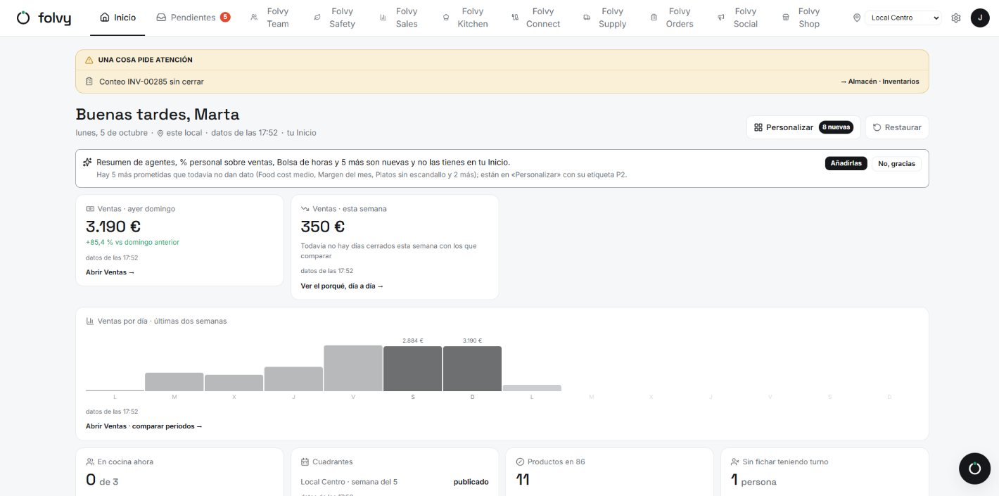
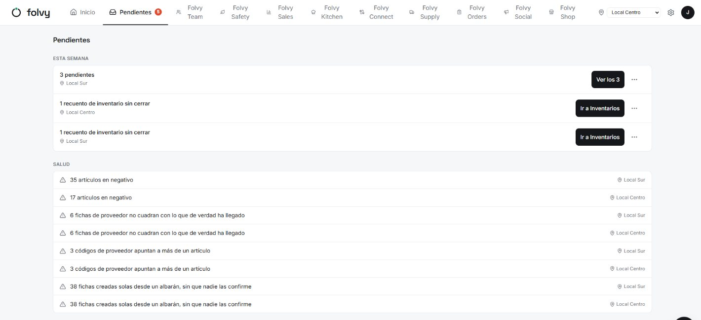
Tarjetas de ventas, canales, personal, agotados, cuadrantes o food cost. Cada usuario elige las suyas y las ordena.
Un recuento sin cerrar o un local sin fichajes aparece en la primera línea, con el enlace directo.
Todo lo pendiente de todos los módulos, por local y por semana.
Avisa cuando algo no cuadra: artículos en negativo, fichas de proveedor que no coinciden con lo recibido, platos sin coste.
La misma pantalla sirve al encargado de un local y a quien dirige todos.
Un botón en cada pantalla para preguntar en lenguaje normal o por voz.
Un TPV que cualquiera aprende en un turno: botones grandes, pocos pasos y la cuenta siempre a la vista. Funciona en ordenador, tablet y móvil, y cada venta nace ya con su coste y su margen.
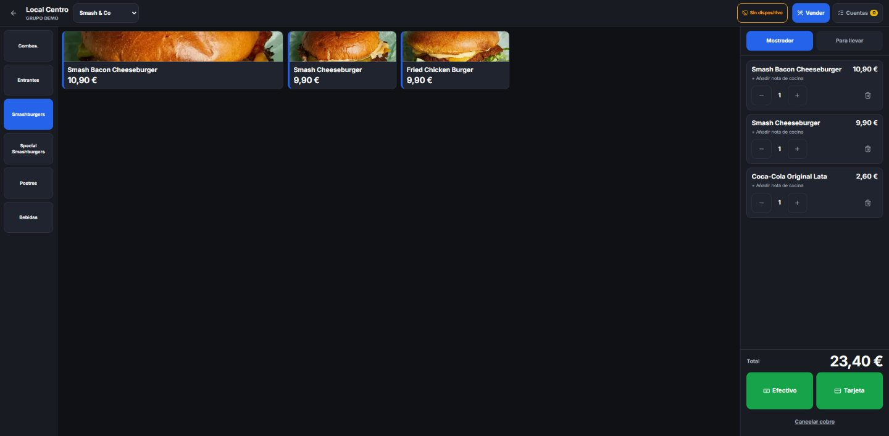
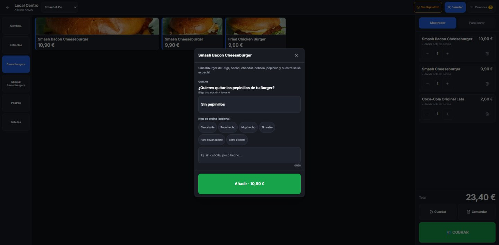
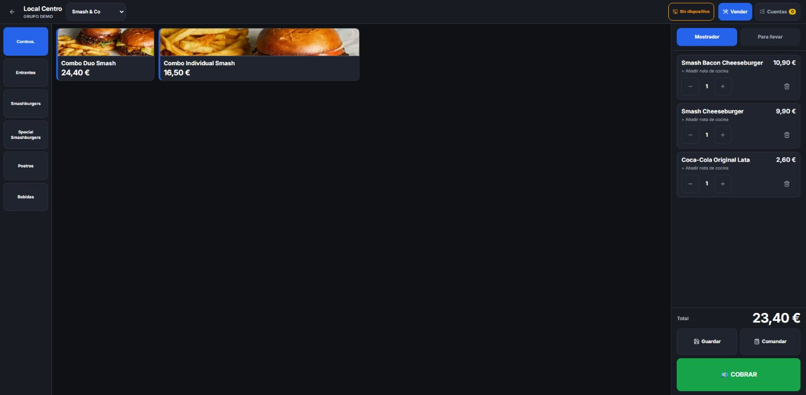
Nota. Algunas de estas funciones están en desarrollo o en fase final. En la demo os enseñamos lo que ya funciona y os decimos el estado y la fecha de cada una.
Todo lo que necesita un local con mesas, barra y caja, pensado para camareros y encargados, no para informáticos.
Nota. Algunas de estas funciones están en desarrollo o en fase final. En la demo os enseñamos lo que ya funciona y os decimos el estado y la fecha de cada una.
Los pedidos de mostrador, plataformas y tienda propia entran solos a la misma pantalla y se siguen hasta que salen por la puerta.
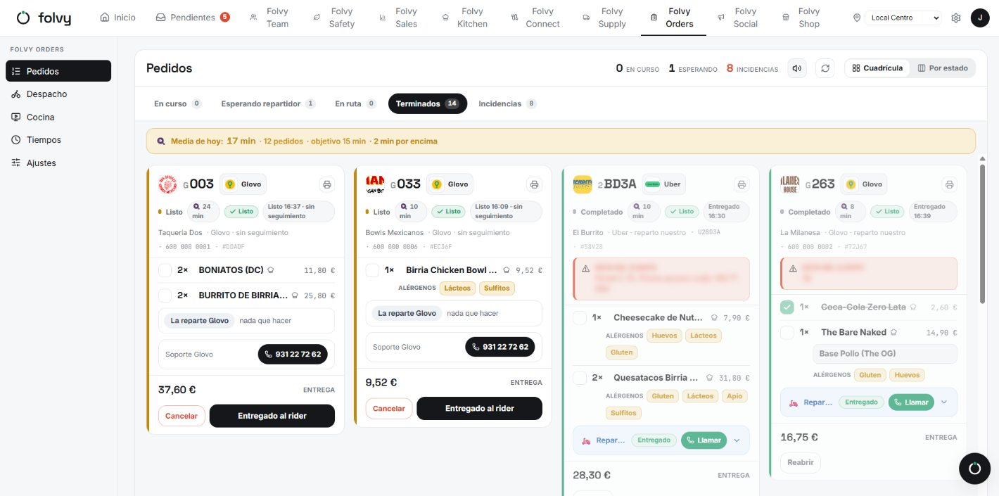
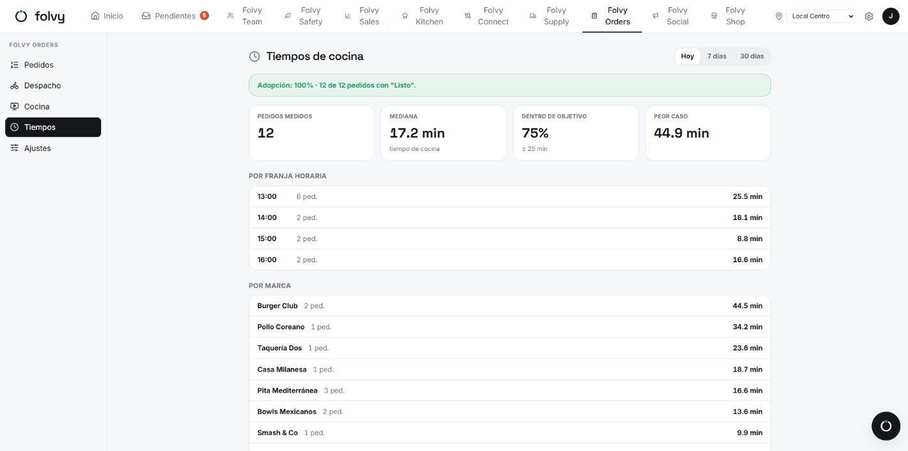
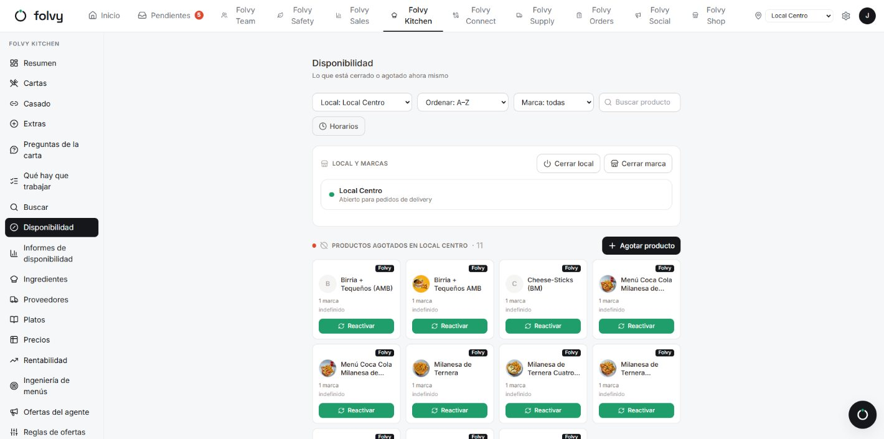
Glovo, Uber Eats, Just Eat, tienda propia y mostrador en una pantalla, sin una tablet por plataforma.
En tablets normales: vista de elaboración por partida y vista de pase, con aviso sonoro.
Ticket de cocina, ticket de bolsa y una pegatina por plato con sus alérgenos. Se imprimen solos al aceptar.
Cocina y pase los ven en cada plato sin consultar nada.
Cuánto tarda cada pedido, cada franja y cada marca, contra el objetivo marcado.
Cancelaciones y retrasos quedan separados con su motivo.
Los pedidos directos se envían al repartidor desde aquí, con el ahorro frente a la plataforma a la vista.
Un botón para pausar un local o una marca en todos los canales a la vez.
Cualquier ticket se vuelve a sacar; un pedido se cierra a mano indicando por qué.
La carta de cada marca se mantiene en un solo sitio y desde ahí se publica a los locales, al TPV, a la tienda y a las plataformas.
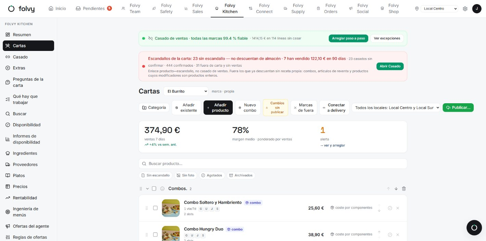
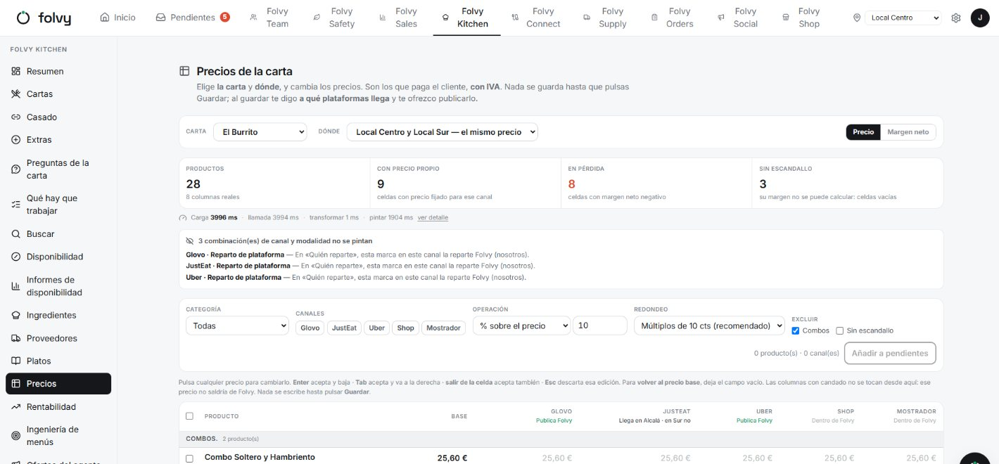
Categorías, productos, combos y fotos, con arrastrar para ordenar.
A todos los locales o a uno, y a las plataformas conectadas.
Sala, mostrador, tienda y cada plataforma, en una sola rejilla.
Un porcentaje a un canal o a una categoría en dos toques, con redondeo.
La rejilla cambia de precio a margen: se ve qué celdas pierden dinero.
«¿Quieres añadir bacon?»: las opciones se crean una vez y se reutilizan en los platos.
Cada extra que se cobra dice lo que lleva, para que descuente y tenga margen.
Productos sin receta, sin foto o agotados, filtrados de un toque.
Cualquier plato, ingrediente o extra de cualquier marca.
Lo que cuesta de verdad cada plato, al céntimo, y recalculado solo cada vez que cambia el precio de una compra.
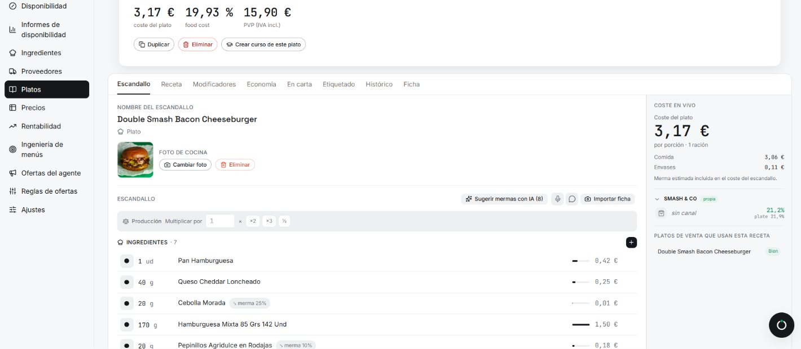
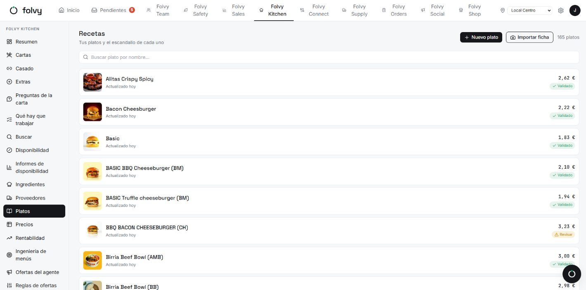
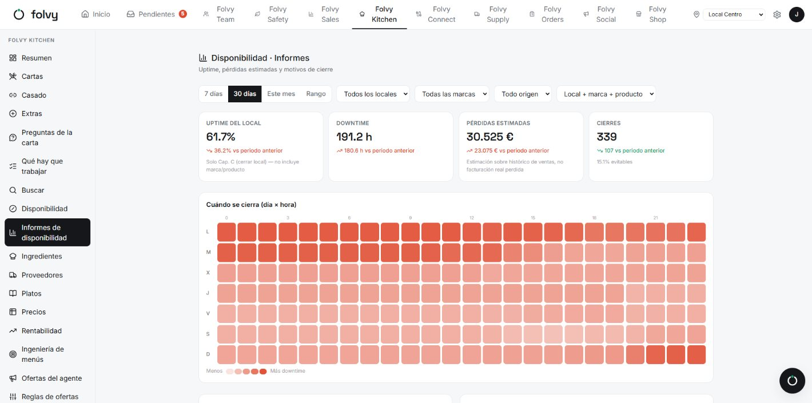
Ingredientes, envases y preparaciones. El coste sale de la última compra.
Se fotografía la ficha en papel y Folvy la convierte en receta.
La inteligencia artificial propone la merma de cada ingrediente; cocina la acepta o la corrige.
Multiplicar la receta por 2, por 3 o por la cantidad que haga falta.
Salsas, masas y bases con su propia receta, que entran en otros platos.
Salen de los ingredientes y van a la carta, a las pegatinas y a las plataformas.
Un botón crea la formación para que el equipo aprenda a hacerlo.
Se marca en cocina y desaparece de todos los canales. Queda cuánto tiempo estuvo cerrado.
Horas sin vender y pérdida estimada, por local, marca y producto.
Con el coste de cada plato y lo que se vende de cada uno, Folvy dice qué platos empujar, a cuáles subir el precio y cuáles quitar.
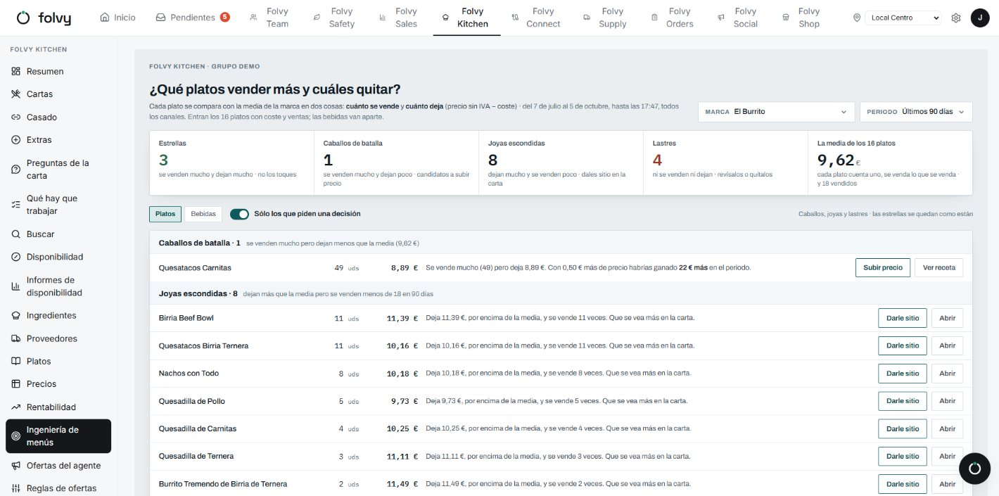
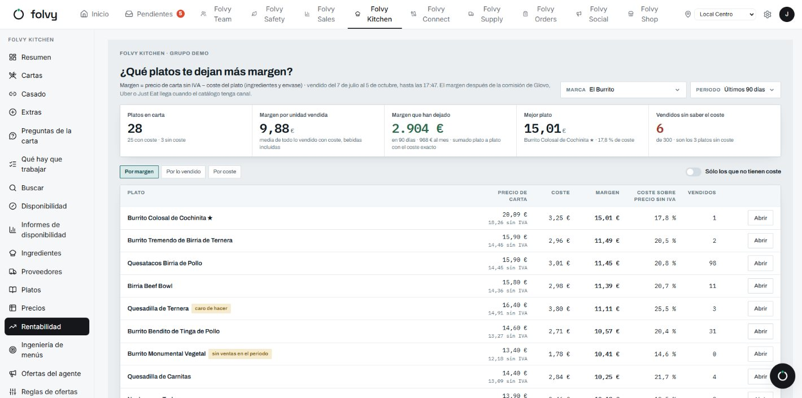
Margen por unidad y margen total de cada plato, por marca y periodo.
Se vende mucho o poco, deja mucho o poco. Cada plato cae en uno.
«Con 0,50 € más habrías ganado 22 € en el periodo»: subir precio, darle sitio o revisarlo.
Avisa de los que tienen el coste por encima de lo normal.
Los platos que nadie pide en el periodo, para decidir si siguen.
Se analizan por separado para no falsear la media.
Del pedido al proveedor a la mercancía dentro del almacén, con el precio de cada cosa actualizado por el camino.
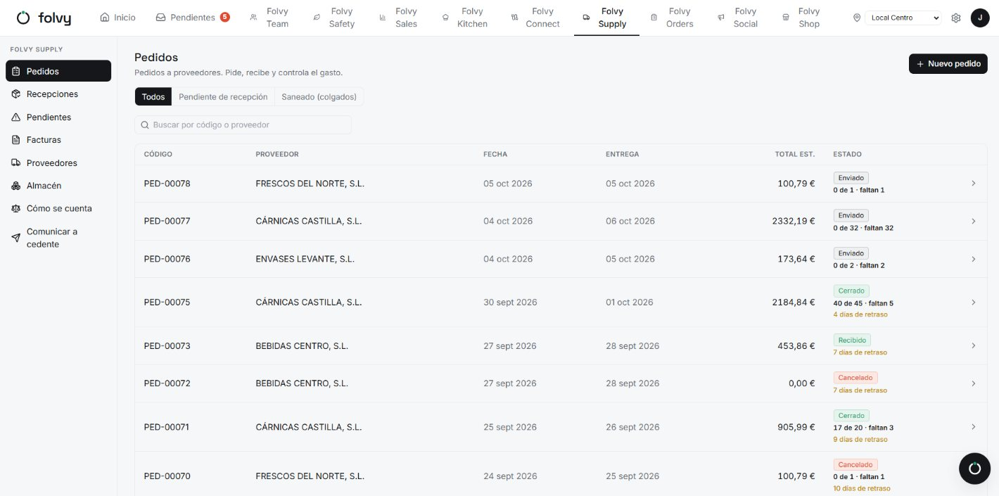
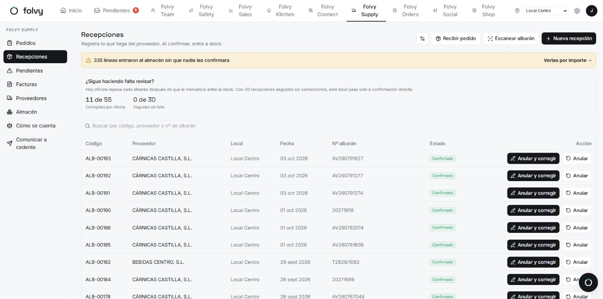
Folvy propone cuánto pedir a cada proveedor según el consumo real y el mínimo de cada artículo.
Enviado, recibido en parte, cerrado o cancelado, con lo que falta.
Se escanea; Folvy reconoce productos, formatos y precios y da entrada al almacén.
Se marca lo que ha llegado de lo pedido y lo que no.
Un albarán mal metido se anula y se corrige, y queda el rastro.
Cajas, bolsas, kilos o unidades: el mismo artículo se compra de varias formas y Folvy lo convierte.
Datos fiscales, forma de pago, artículos que sirve y lo que se le debe.
Se registran o se escanean y se cuadran contra lo recibido.
El precio de cada ingrediente es el de lo comprado, no uno tecleado a mano.
Qué hay, dónde está, cómo se mueve y cuánto debería quedar. Por local y valorado en euros.
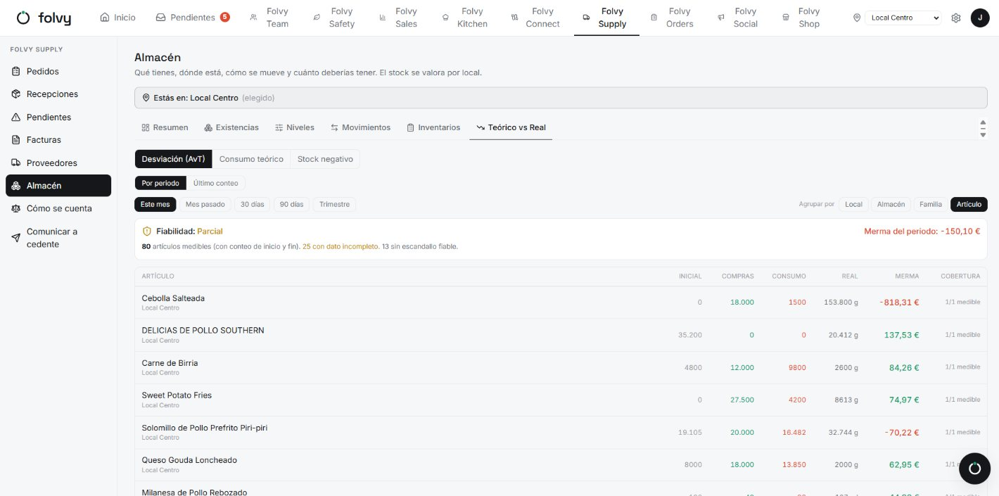
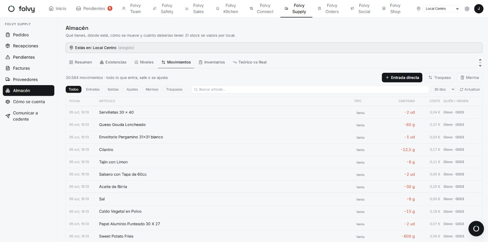
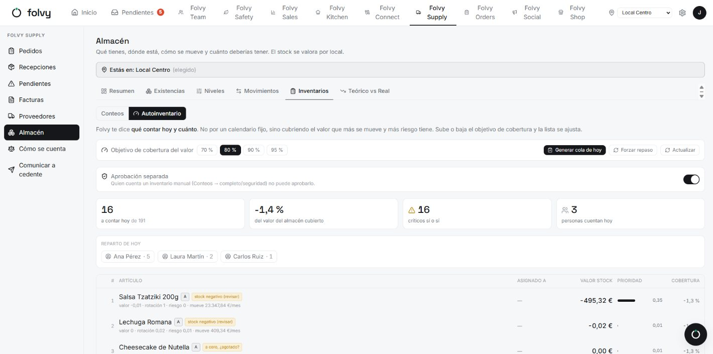
Cámara, congelador, seco: cada artículo en su sitio, con cantidad y valor.
Mínimo y óptimo por artículo y local, con aviso al bajar.
Ventas, entradas, traspasos entre locales, mermas y ajustes, con autor y motivo.
Se registran con su causa y su coste.
Completos o por zonas, asignados a una persona y aprobados por otra.
En el móvil, unos pocos artículos al día: los de más valor y más riesgo.
Quien cuenta no ve lo que dice el sistema, para que no se copie.
Lo que debería haberse gastado según lo vendido frente a lo contado.
Folvy dice cuánto se puede confiar en cada cifra, no solo la cifra.
Las ventas de todos los canales y todos los locales, cruzadas como haga falta y comparadas siempre con el periodo anterior.
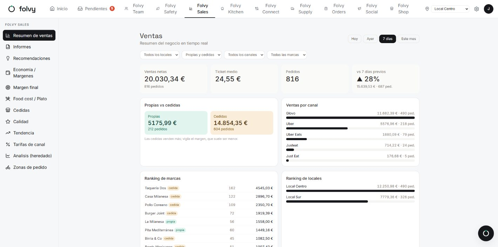
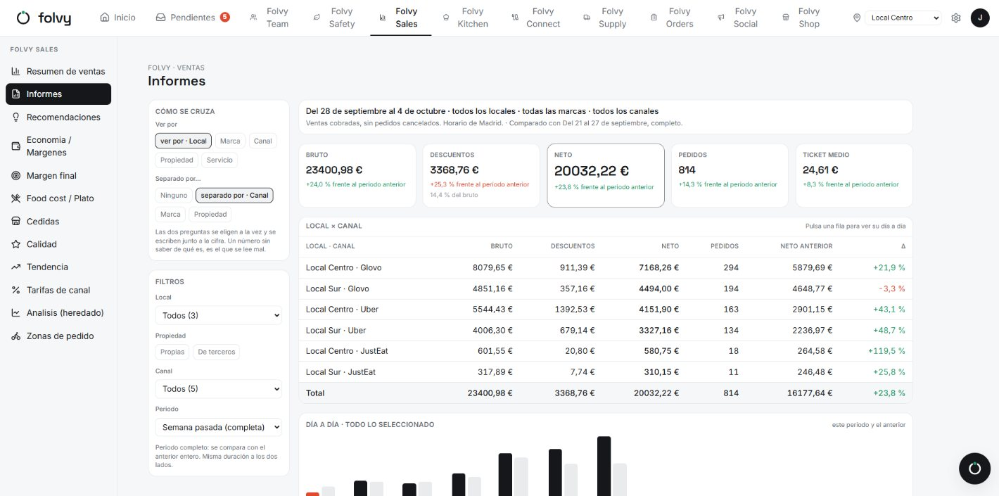
Hoy, ayer, siete días o el mes, con filtros de local, canal y marca.
Qué vende más y por qué canal.
Dos preguntas se eligen y la tabla se monta sola. Se exporta.
Cada cifra frente al mismo periodo anterior, y sin comparar días a medias.
A qué horas se vende, para ajustar turnos y ofertas.
De qué barrios llegan los pedidos y cuáles compensan.
Vender no es cobrar. Folvy enseña cuánto de cada euro vendido en plataforma llega de verdad a la cuenta, y dónde se queda el resto.
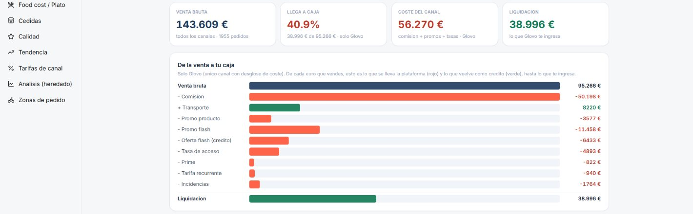
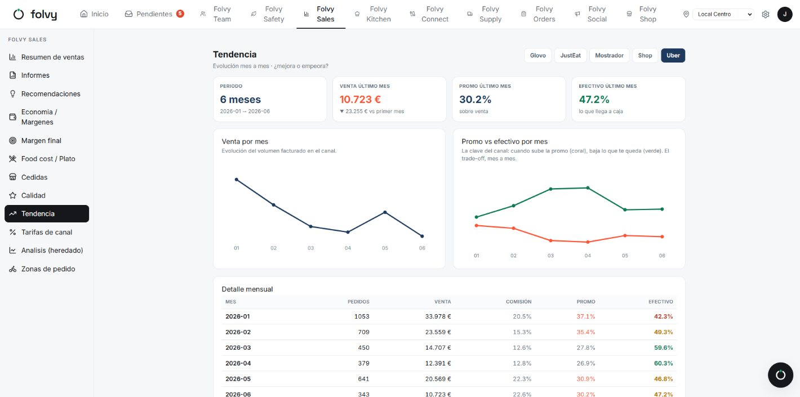
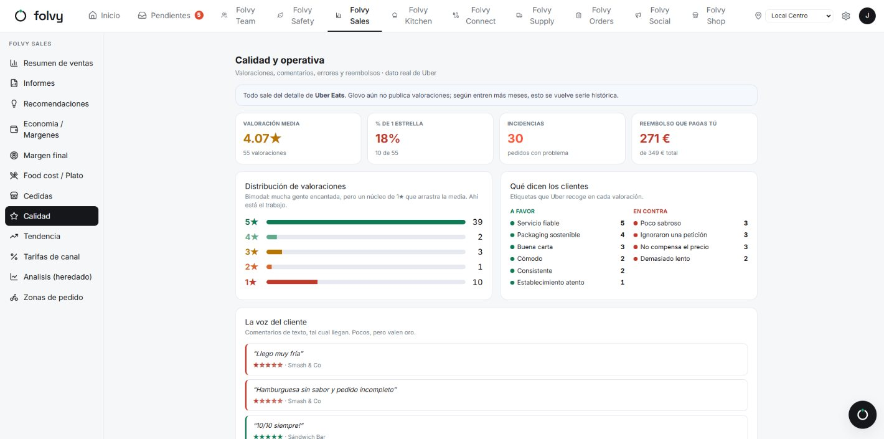
Lo que paga cada plataforma, cruzado con los pedidos.
Comisión, promociones y tasas juntas, que es lo que de verdad cuesta vender ahí.
Qué porcentaje de lo vendido llega a caja en cada marca.
Las comisiones de cada plataforma y tipo de reparto, para calcular el margen real.
Venta menos canal, comida y personal: el número que lo cierra todo.
Folvy analiza los datos y propone acciones concretas.
Los horarios salen de las ventas previstas, y el coste de personal sobre ventas se ve mientras se montan.
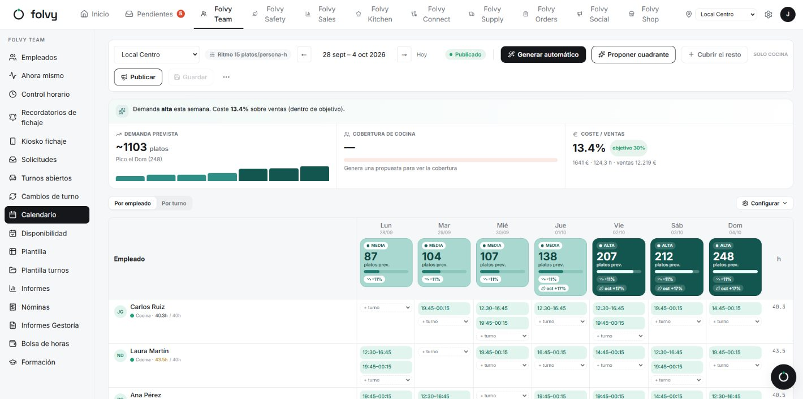
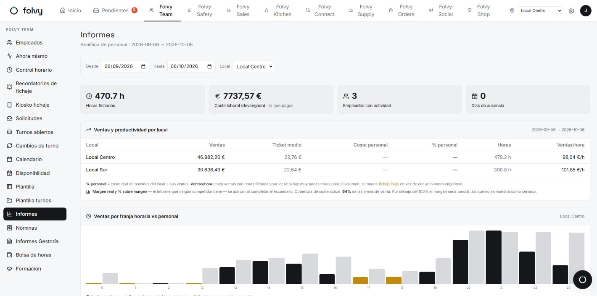
Platos previstos por día a partir del histórico de ventas.
Folvy propone el horario de la semana respetando contratos y descansos.
Euros, horas y porcentaje sobre ventas, contra el objetivo.
Los turnos habituales se guardan y se aplican.
El equipo recibe su horario en el móvil.
Cada persona indica cuándo puede y cuándo no.
Un turno sin cubrir se ofrece; dos compañeros se cambian con aprobación.
Descansos y jornadas que no cumplen, antes de que sean un problema.
Ventas por hora trabajada y por local.
El fichaje diario, lo que sale de él y todo lo que hay que tener al día con cada persona.
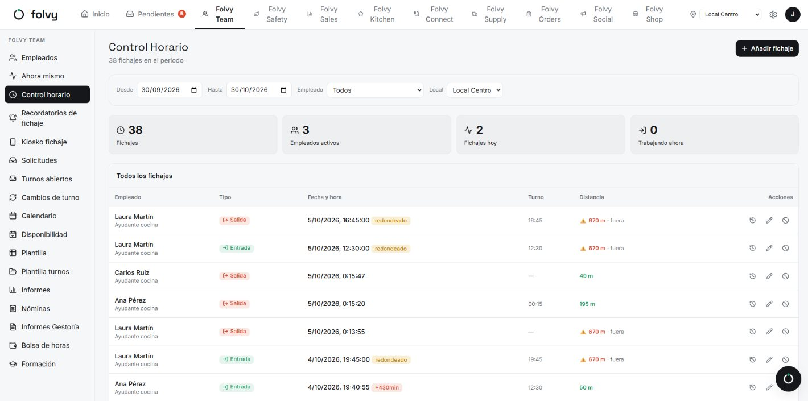
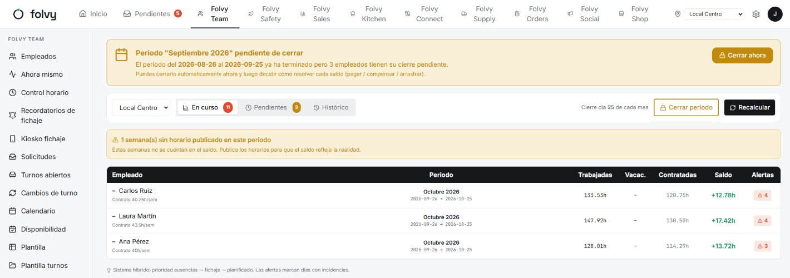
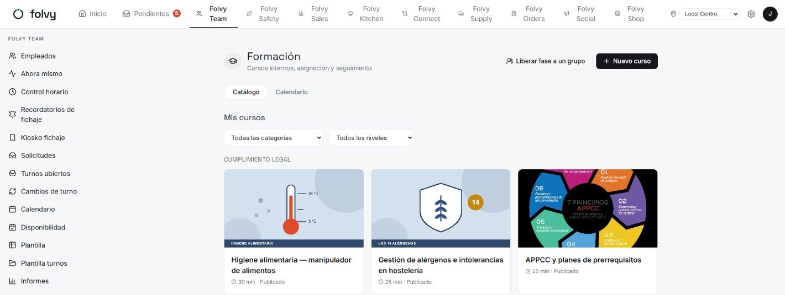
Desde el teléfono de cada uno o desde una tablet fija en modo kiosko.
Quién está trabajando, quién no ha fichado y quién olvidó salir.
Aviso a quien tiene turno y no ha fichado.
Histórico de fichajes con sus correcciones y quién las hizo.
Vacaciones y ausencias, pedidas y aprobadas desde el móvil.
Saldo de cada persona y qué hacer con él: pagar, compensar o arrastrar.
Se sube el PDF y Folvy saca bruto, seguridad social y coste real.
Los datos del mes listos para quien hace las nóminas.
Cursos obligatorios y de cocina, con itinerario para los nuevos.
El APPCC deja de ser una carpeta de papeles. Los controles se hacen en la tablet o el móvil y todo queda listo para una inspección.
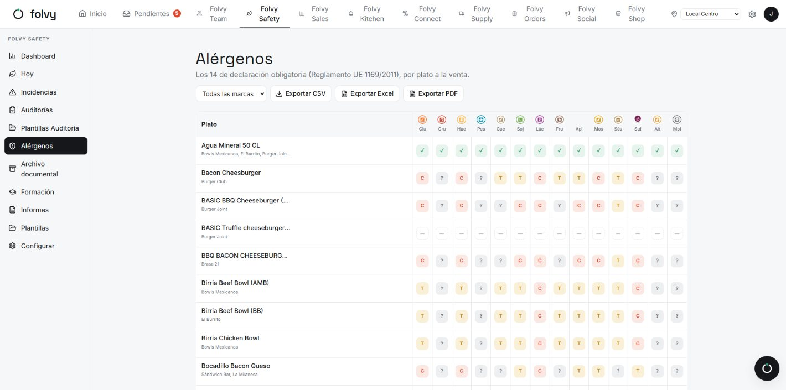
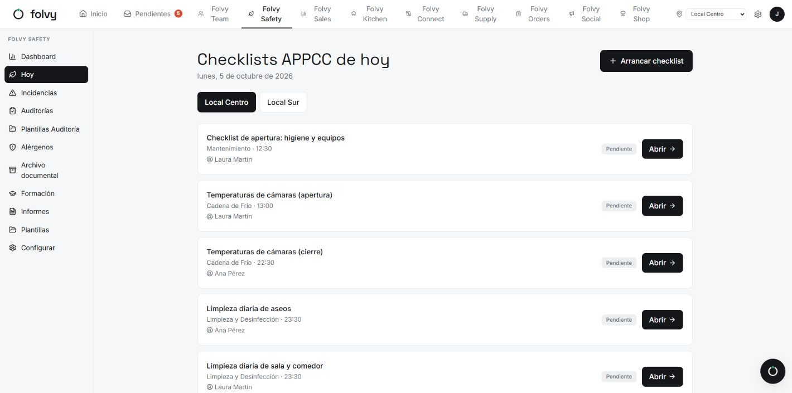
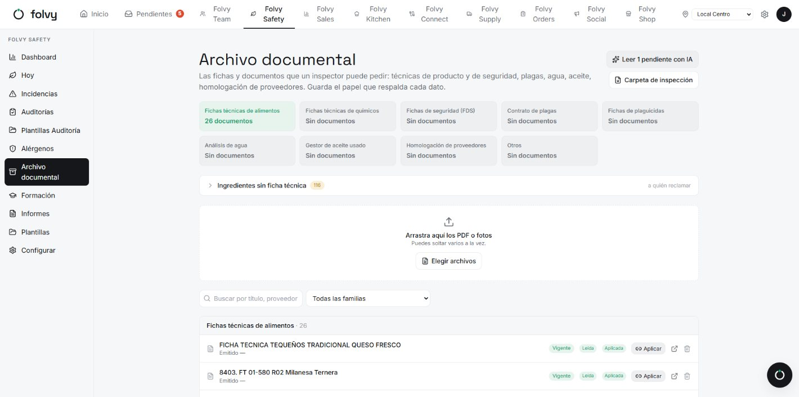
Apertura, cierre, temperaturas y limpieza, asignados a quien trabaja ese día.
Con gravedad, foto y aviso al encargado; se escalan si no se cierran.
Revisiones periódicas con puntuación, sobre plantillas propias.
Se arrastra una ficha técnica; Folvy la lee y aplica sus alérgenos al ingrediente.
Un botón reúne en un PDF todo lo que se puede pedir.
Controles hechos, incidencias abiertas y formación obligatoria, por local.
Tres piezas que trabajan con el mismo dato: lo que cuesta cada plato. Por eso las ofertas no se comen el margen.
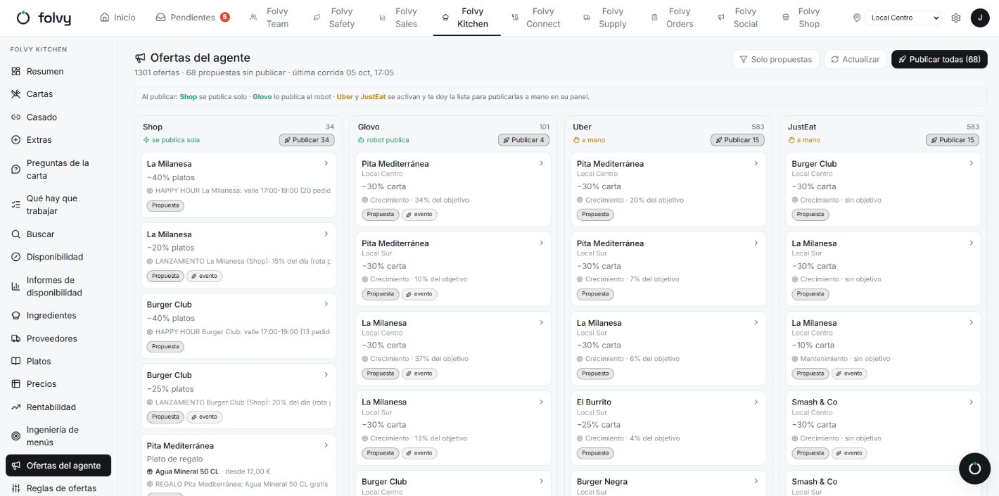
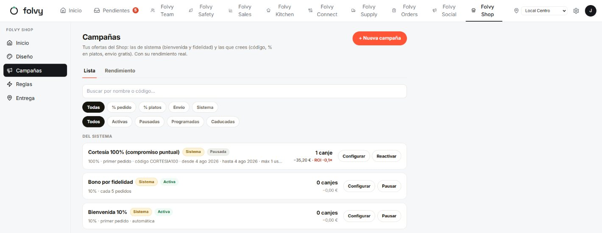
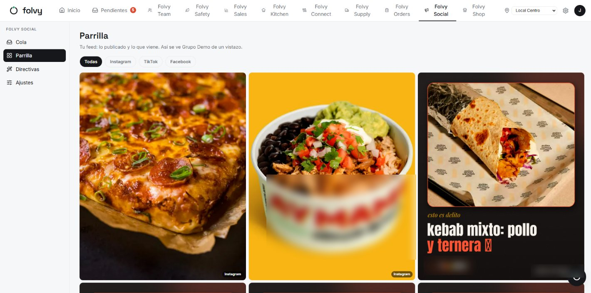
Cada marca con su escaparate, o varias marcas en un solo pedido. Sin comisión de plataforma.
Registro con consentimiento, bienvenida, bono por repetición y cupones.
Ninguna promoción baja del margen mínimo que se marque.
Porcentaje, 2×1, regalo, envío gratis, código y franjas horarias.
Hasta dónde se reparte, a qué precio y con qué pedido mínimo.
Se le dice al agente cómo habla cada marca; propone, y una persona aprueba.
Folvy se conecta con lo que ya usáis, y lleva inteligencia artificial en cada módulo para quitar trabajo, no para adornar.
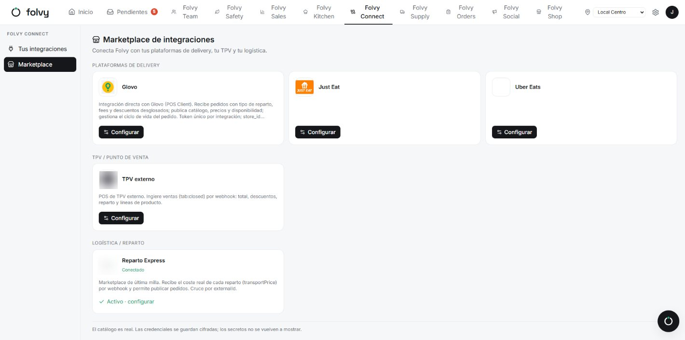
La regla es siempre la misma: la inteligencia artificial propone y una persona decide. Nada se publica, se pide o se cambia sin que alguien lo confirme.
Cada trabajador lleva Folvy en su móvil, y puede instalarlo como una aplicación más. No es una aplicación de recursos humanos aparte: es donde ficha, ve su horario y hace el trabajo del día en el local.
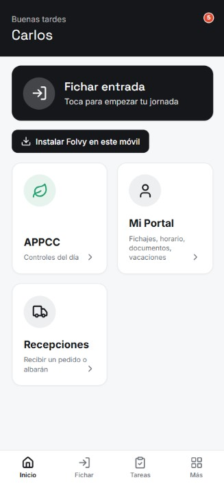
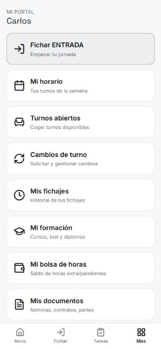
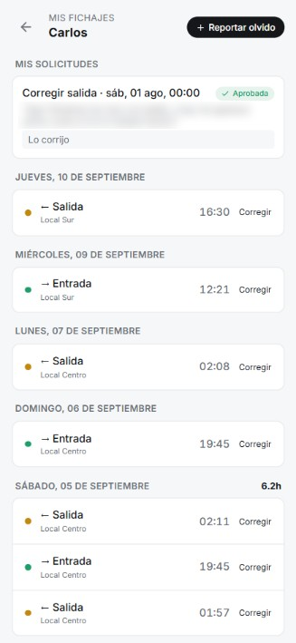
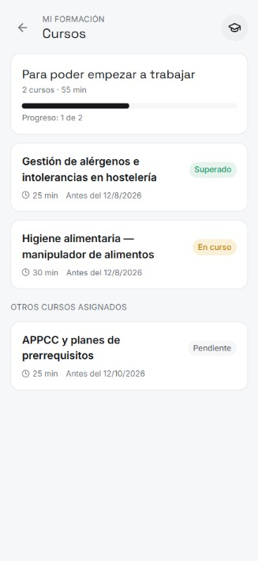
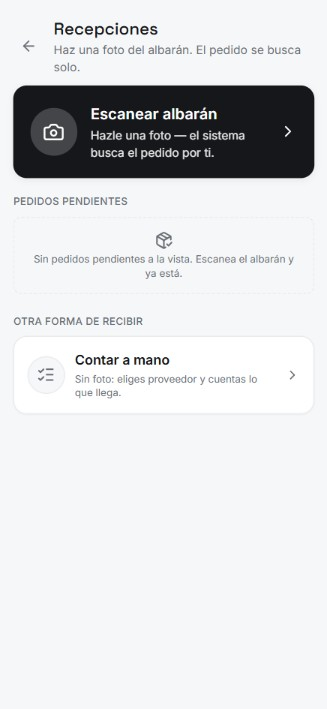
Para la empresa, esto significa que el registro horario, el APPCC y el inventario se hacen solos durante la jornada, con nombre y hora, en vez de rellenarse a final de mes.
Todo el sistema de gestión funciona también en el teléfono, con el menú abajo. El dueño mira las ventas desde casa; el encargado resuelve sin ir al ordenador.
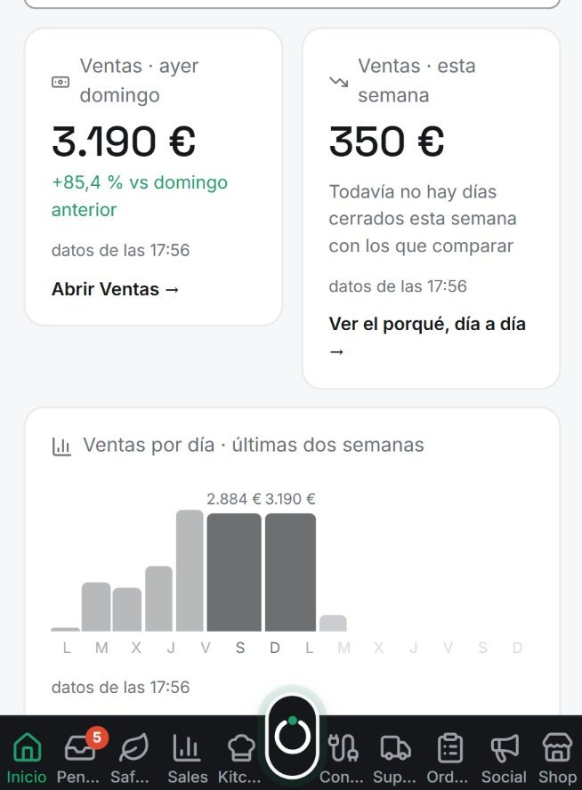
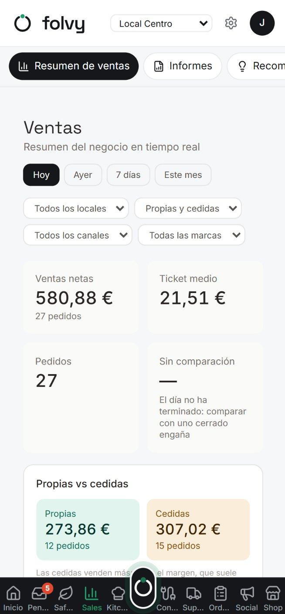
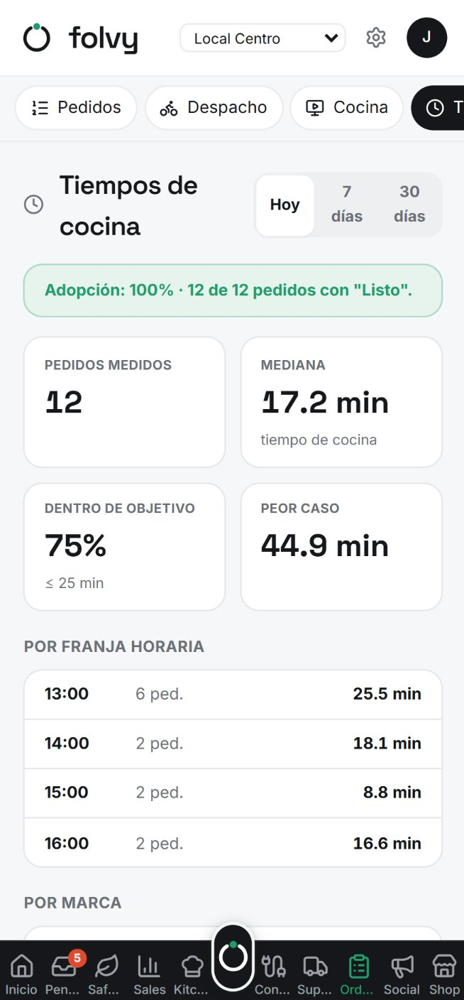
De hoy, de ayer o del mes, por local, marca y canal.
Pedidos en curso, tiempos de cocina e incidencias.
Vacaciones, cambios de turno y correcciones de fichaje.
Un producto, una marca o un local entero, en todos los canales.
Lo que pide atención llega al teléfono del responsable.
Preguntar por voz cómo va el día y recibir la respuesta con datos.
Sumied es la administración de Folvy: contabilidad, bancos, impuestos y laboral. Va dentro de Folvy, así que las ventas, las compras y las nóminas ya están dentro cuando llega la hora de contabilizar. Quien la usa no teclea asientos: revisa y valida lo que Sumied propone.
Cifras de la empresa del grupo que usa Sumied a diario, medidas el 30/10/2026.
Los impuestos salen de la contabilidad que ya está hecha. Sumied prepara cada modelo, lo presenta en la Agencia Tributaria con el certificado de la empresa, guarda el justificante y apunta el pago cuando se carga en el banco.
El equipo ficha en Folvy, las nóminas llegan a Sumied y la asesoría trabaja en el mismo sistema que la empresa. Nadie envía Excel a nadie.
Folvy no es un programa de un local que luego se multiplica. Los locales, las marcas y los canales están en la base de todo.
Cada venta, cada compra y cada hora trabajada sabe de qué local, de qué marca y por qué canal.
Los mismos informes para el grupo entero o para un solo local, sin exportar.
Cada persona ve y toca solo lo que le corresponde.
Cada responsable recibe los suyos: un agotado, una incidencia, un fichaje que falta.
La mercancía que va de un local a otro queda registrada en los dos.
Si se cocinan marcas de otros, Folvy las separa en ventas y en márgenes.
Los datos de cada cliente están separados de los demás y alojados en la Unión Europea.
Se entra desde el navegador. Las tablets de cocina llevan su aplicación y se actualizan solas.
Un local nuevo o una marca nueva se dan de alta y heredan carta, proveedores y plantillas.
No hace falta arrancar con todo. Cada grupo activa primero lo que más le duele y va sumando el resto.
Folvy no son varias aplicaciones unidas con integraciones: es un único programa con una única base de datos. Por eso un dato entra una vez y llega a todas partes.
Folvy cambia casi cada día. Lo que lo hace posible no es tener cuidado: es un camino fijo que cada cambio tiene que recorrer antes de llegar a vuestros locales, y que comprueban las máquinas, no la buena voluntad.
Un grupo de hostelería suele elegir entre dos caminos: juntar programas sueltos o llevar un programa de gestión genérico. Folvy es un tercer camino, hecho para la cocina y para la oficina a la vez.
| Lo que necesita un grupo | Programas sueltos TPV, una tablet por plataforma, Excel | Programa de gestión genérico contabilidad y facturación | Folvy 360 |
|---|---|---|---|
| El coste real de cada plato vendido | A mano, en Excel | No llega a la cocina | Sale de la última compra, solo |
| Todos los canales en una sola cocina | Una tablet por plataforma | — | Una pantalla por partida |
| El horario según lo que se va a vender | Aparte, a ojo | — | Lo propone con la previsión |
| Contabilidad sin teclear ventas ni compras | Se pasa a la gestoría | Se importa o se teclea | Ya está dentro |
| Impuestos y Verifactu | La gestoría | Sí | Sí, con el origen de cada casilla |
| Resultado por local, marca y canal | Hojas de cálculo | Con centros de coste a mano | De serie, en cada asiento |
| APPCC, alérgenos y formación | Carpeta y otra app | — | Salen de las recetas |
| Una sola persona a quien llamar | Un proveedor por programa | Uno, solo para la oficina | Uno, para todo |
Cada grupo tiene su manera de hacer las cosas, y ahí suele estar lo que lo hace funcionar. No pedimos que la cambiéis para encajar en el programa.
Las peticiones no se pierden en un buzón de soporte. Llegan directamente a quien diseña y construye el producto.
Folvy nace dentro del sector. Sabemos lo que es un servicio de sábado por la noche, un inventario a fin de mes y una inspección sin avisar.
Contadnos en la demo qué echáis en falta en lo que usáis hoy. Es por donde nos gusta empezar.
| Parte | Qué cubre |
|---|---|
| Inicio y Pendientes | Centro de mando, avisos y lista de tareas |
| TPV | Venta, sala, comandero, cobro, caja y facturación |
| Folvy Orders | Pedidos de todos los canales, pantallas de cocina, pase, tickets, tiempos y reparto |
| Folvy Kitchen | Cartas, precios, recetas, costes, rentabilidad y agotados |
| Folvy Supply | Pedidos a proveedor, albaranes, facturas, almacén y recuentos |
| Folvy Sales | Ventas, informes, márgenes, liquidaciones y calidad |
| Folvy Team | Cuadrantes, control horario, bolsa de horas, nóminas y formación |
| Folvy Safety | APPCC, incidencias, auditorías, alérgenos y documentos |
| Folvy Shop | Tienda propia, campañas, fidelización y zonas de entrega |
| Folvy Social | Publicaciones para redes propuestas por inteligencia artificial |
| Folvy Connect | Plataformas de delivery, TPV externo y reparto |
| App del empleado | Fichar, horario, tareas, documentos y formación en el móvil |
| Sumied | Contabilidad, facturas que entran solas, bancos, préstamos, impuestos y Verifactu |
| Laboral y Mi portal | Registro de jornada, nóminas, documentos de cada persona y acceso de la asesoría |
| La plataforma | Datos en la UE y aislados por cliente, tablets que se actualizan fuera del servicio, cambios probados y aprobados |
Nota. Folvy está en desarrollo continuo. La mayor parte de lo que recoge este dosier ya está en uso; lo que no lo está lleva su etiqueta: En uso En pruebas En desarrollo. En la demo os enseñamos lo que ya funciona y os decimos el estado y la fecha de cada cosa.
Una hora, con vuestro caso: cuántos locales, qué usáis hoy y qué os duele más.
Qué partes activar primero, qué habría que adaptar o construir para vosotros, y su precio.
Cargamos carta, proveedores y equipo con vosotros, local a local.